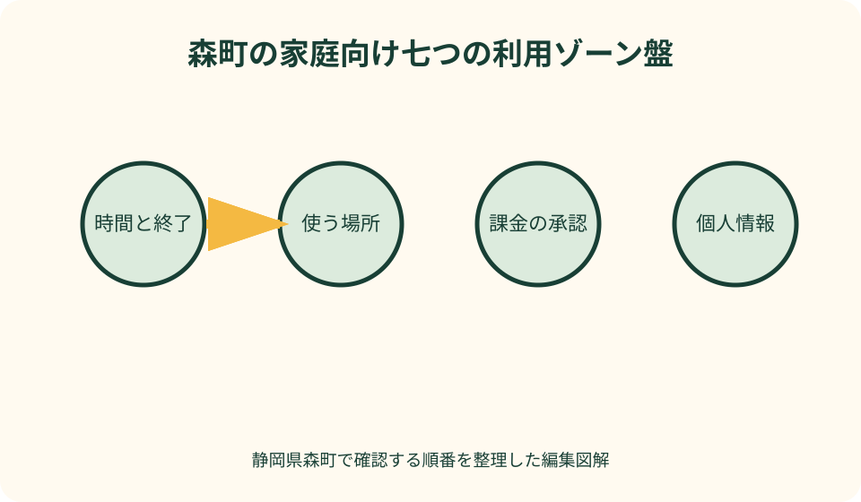
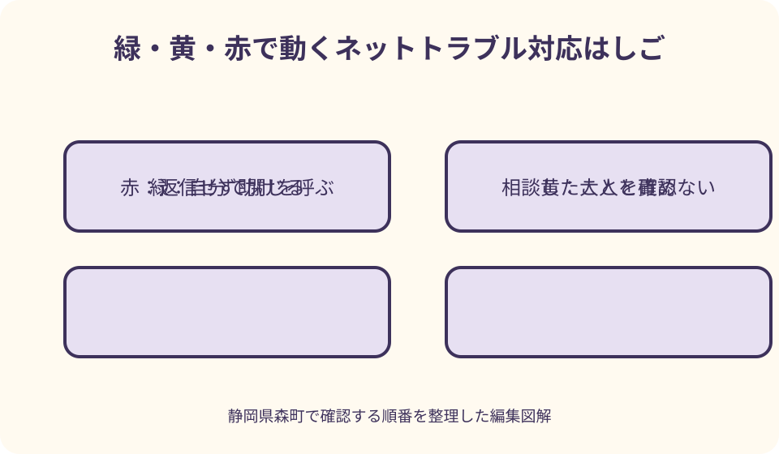

学校・就学・家庭記録｜最終確認 2026-08-10
静岡県森町で子どものインターネット利用ルールを家族で作る｜時間・課金・写真・相談の決め方
子どものネット利用をめぐる約束は、利用時間だけを決めても長続きしません。学習、友人関係、遊び、創作が同じ端末に集まる今は、使う場所、支払い、個人情報、写真、困ったときの合図まで別々に話す必要があります。本稿は、森町で暮らす家庭が、子どもを話し合いの当事者として迎え、成長や生活の変化に合わせて更新できる約束を作るための実務ガイドです。

編集イラスト結論：家庭ルールは監視契約ではなく、困ったときに戻れる共同作業
家庭ルールの目的は、子どもを一日中見張ることでも、ネットを危険なものとして遠ざけることでもありません。自分で判断できる範囲を少しずつ広げながら、判断に迷ったときに家族へ戻れる道を用意することです。禁止事項の長い一覧より、「誰に、どの段階で、どう相談するか」が書かれた短い約束の方が実際の場面で使えます。
こども家庭庁は青少年のインターネット利用環境について、発達段階に応じた適切な利用や、保護者によるフィルタリング等の活用、家庭内の話し合いに関する情報を公開しています。ただし、国の資料は各家庭の生活時間や端末構成まで決めるものではありません。家庭では一次情報を土台に、本人の年齢、通学、習い事、睡眠、連絡手段へ落とし込みます。
約束は親が完成品を渡すのではなく、子どもが理由を尋ね、代案を出せる形で作ります。「夜は禁止」だけなら学級連絡の確認と遊びが混ざりますが、「翌朝に支障を残さない」「緊急連絡は受け取れる」と目的を言葉にすれば、端末を置く時刻や例外を具体化できます。
本稿の確認日は2026年8月10日です。アプリの仕様、学校の端末運用、相談窓口の受付方法は変わる可能性があります。設定画面や連絡先は実際に使う日に公式ページで確かめ、学校が配布した端末については学校の利用条件を家庭の判断で上書きしないでください。
最初の棚卸し：端末、アカウント、支払う人を一枚にする
話し合いの前に、家にあるスマートフォン、タブレット、ゲーム機、学校端末、テレビ、古い予備機を並べます。Wi-Fiにつながる機器は、電話番号がなくても動画視聴、チャット、購入ができる場合があります。「子どものスマホだけ」を対象にすると、別の端末から同じアカウントへ入れる抜け道が生じます。
次に、端末ごとに主な用途、使う人、ログイン中のアカウント、購入を承認する人、連絡を受ける保護者を書きます。パスワードそのものを家族表へ記載する必要はありません。回復用の連絡先が古くないか、二段階認証を使えるか、紛失時に誰が停止操作をするかを確認します。
学校から貸与された端末は、家庭所有の端末と欄を分けます。学習用アカウント、保存データ、アプリ追加、持ち帰り、故障時の連絡には学校側のルールがあります。家庭の使用時間を話し合う際も、宿題や学校からの連絡確認を遊び時間と機械的に合算せず、目的と終了の目安を分けます。
棚卸し表には、保護者が契約者である回線、クレジットカードが登録されたストア、定期購入中のサービスも記します。子どもを問い詰めるための調査ではなく、大人側の管理漏れを見つける作業です。使っていない端末からカード情報を外すだけでも、誤操作や無断購入の入口を減らせます。
子どもの参加：年齢ではなく、できる判断を確かめる
同じ学年でも、文字で確認する方が得意な子、口頭で相談しやすい子、オンラインの友人関係が生活の大きな支えになっている子がいます。年齢だけで一律の強さを決めず、「有料表示を見分けられるか」「知らない相手からの連絡を止められるか」のように場面ごとの力を見ます。
子どもには先に、ネットで守りたいものを三つ挙げてもらいます。友達との会話、好きなゲーム、作品発表、調べ学習など、利用の価値が分かれば、保護者は守りたい生活との折り合いを提案できます。危険だけを説明する会議にすると、子どもは利用実態を隠す方が得だと感じかねません。
意見が割れたときは、一週間の試行期間を設けます。例えば終了時刻を二案から選び、睡眠、朝の支度、宿題、本人の納得感を一緒に記録します。試して合わなければ戻せる仕組みは、親の権限を手放すことではなく、根拠のある調整を可能にします。
低年齢の子には、抽象的な「安全に使う」ではなく、色や絵で行動を示します。緑は一人でできる、黄は大人に聞いてから、赤は画面を閉じてすぐ呼ぶ、という三段階なら、読み書きの負担を抑えながら緊急時の反応をそろえられます。
時間のルール：分数だけでなく、始め方と終わり方を決める
「一日一時間」のような総量は分かりやすい一方、動画の途中、対戦中、友人との共同作業では止める準備が必要です。開始前に終了時刻を確認し、終了の十分前に通知し、保存や退出を済ませる流れまで決めます。守れなかった一回だけで依存と決めつけず、止めにくかった理由を聞きます。
平日、休日、長期休業、試験前、体調不良の日では生活が異なります。すべてに同じ数字を置くのではなく、起床、食事、入浴、睡眠、学習と重ならない枠を先に確保します。森町内でも通学や送迎にかかる時間は家庭ごとに違うため、他家の時間割をそのまま採用しません。
夜間は端末を寝室の外へ置く方法が考えられますが、家族の緊急連絡に使う場合は代替が必要です。着信できる端末を一台残す、家族からの連絡だけ通知する、保護者の端末を連絡先にするなど、目的に合う案を選びます。災害時の情報確認まで止める約束にはしません。
利用終了後の回復もルールに含めます。画面から離れ、水分を取り、翌日の準備をする短い動作を固定すると、取り上げを巡る衝突を減らせます。眠れない、朝起きられない、食事を抜く状態が続くときは、罰を強めるだけで解決しようとせず、学校や医療・相談機関への相談も検討します。
場所のルール：家の間取りと外出場面から考える
家庭内では、充電場所、就寝時の保管場所、通話や撮影をしてよい場所を決めます。リビング限定が合う家庭もあれば、家族の仕事やきょうだいの学習を妨げる家庭もあります。「保護者から見える場所」という一語ではなく、音声が漏れない、夜は充電台へ戻すなど、守りたい理由へ分解します。
浴室、道路横断中、自転車乗車中は、落下や事故、意図しない撮影につながります。通知が来ても安全な場所へ止まるまでは操作しないことを確認します。位置情報を共有していても、移動中の安全を保証するものではなく、子どもの周囲確認に代わりません。
外出先の無料Wi-Fiでは、接続先の名称が似ていても正規の設備とは限りません。重要なログインや決済を避け、必要なら携帯回線へ切り替える、接続後は自動接続を外すといった行動を決めます。技術用語を覚えさせるより、「お金と本人確認は家へ戻ってから」という短い合図が使いやすい場合があります。
友人宅や親族宅では、その家の端末や約束も尊重します。自宅の許可があるから他人の端末で購入してよい、という意味にはなりません。泊まりの前に終了時刻、写真撮影、ゲーム内購入を親同士で短く確認し、子どもだけに調整役を背負わせないようにします。
課金のルール：金額上限より前に、承認の手順を作る
課金は「月千円まで」と金額だけを決めても、定期購入、ゲーム内通貨、くじ形式、無料体験後の自動更新が混ざります。購入したい物が出たら、商品名、表示総額、支払方法、一回限りか継続かを子どもが示し、保護者が決済画面で確認してから進める手順にします。
消費者庁は、無料と有料の境目を確かめること、課金状況を確認すること、クレジットカードを管理すること、親子で遊び方を話し合うことなどを案内しています。端末の購入承認やペアレンタルコントロールは有効な補助ですが、設定をしただけで誤課金が起きないと保証されるわけではありません。
カード番号を端末へ保存しない、購入のたびに認証を求める、プリペイド式を使う、といった選択肢を家計と年齢に合わせて組み合わせます。暗証番号を子どもの誕生日など推測しやすいものにせず、大人同士でも共有範囲を限定します。利用明細は責める材料ではなく、契約者が定期的に確認する記録です。
身に覚えのない請求が見つかったら、日時、アプリ名、注文番号、使用アカウント、表示画面を落ち着いて整理し、プラットフォームやカード会社へ確認します。返金の可否は個別事情で異なるため断定できません。困ったときは消費者ホットライン188から身近な消費生活相談窓口につなぐ方法があります。
個人情報：名前だけでなく、生活の組み合わせを守る
個人情報は住所や本名だけではありません。学校名、制服、部活動、通学時刻、家族の勤務、よく行く場所が組み合わさると、生活圏を推測されることがあります。「一つなら平気」と判断せず、投稿前に複数の手掛かりが重なっていないかを見ます。
プロフィールには、公開範囲、検索される名前、連絡できる相手を確認する欄を作ります。実名が必要な学校サービスと、公開名を選べるゲームやSNSを分けます。年齢を偽ることは利用条件や年齢保護の仕組みを外す可能性があるため、登録情報は保護者と正確に入力します。
パスワードは友人同士でも貸し借りしないことを基本にします。本人しか知らない秘密を一律に否定するのではなく、アカウント回復の仕組みを保護者と確認し、乗っ取られた疑いがあるときにすぐ相談できるようにします。認証コードを求めるメッセージには返信せず、公式アプリから状態を確かめます。
保護者側も、家族の予定表、成績表、名札の見える写真を公開するときは注意が必要です。子どもにだけ投稿制限を課し、大人が本人の意思を聞かずに写真や出来事を載せると約束の説得力が失われます。家族全員が同じ確認手順を使うことが重要です。
写真と動画：撮る前、送る前、公開前の三回で立ち止まる
写真は撮影した時点で、写った人との関係が始まります。友人やきょうだいが写るときは撮る前に確認し、グループへ送る前、公開範囲を広げる前にも確かめます。一度の承諾を、別の投稿や翌年の再利用まで続く許可と扱わないようにします。
背景には、表札、郵便物、車の番号、窓から見える景色、学校用品、店のレシートが写ることがあります。顔を隠しただけでは位置や時間を推測できる場合があるため、投稿画面を拡大して背景を確認し、位置情報の付与設定も端末ごとに見直します。
行事の写真は、学校や主催者が示す撮影・公開の条件を優先します。撮影可能でもSNS公開が認められているとは限りません。他の子どもの顔や名札が入った場合は、切り取りやぼかしだけで十分かを考え、迷うなら家族内の保存に留めます。
送信後に不安になったら、まず公開範囲を狭め、削除機能や運営への申告を使い、必要に応じて受信者へ再共有しないよう依頼します。完全に回収できるとは限りませんが、「もう遅い」と諦めず、画面とURL、日時を控えて大人へ伝える手順を決めておきます。
知らない相手との連絡：会う約束と秘密の要求を分けて止める
ゲームや創作活動では、会ったことのない相手と協力する場面があります。知らない人との会話をすべて禁止すると、子どもが実態を隠しやすくなります。個別メッセージへ移る、別アプリへ誘う、住所や学校を聞く、贈り物を提案するなど、警戒する行動を具体的に共有します。
「親には内緒」「今すぐ返事をして」「写真を送れば信用する」と急がせる要求は、関係を続ける条件にしないよう教えます。返答を止め、ブロックや通報を使い、信頼できる大人へ画面を見せることを赤信号の行動にします。子どもが返事をしてしまっていても、相談したことを先に評価します。
実際に会う話が出たときは、子どもだけで判断させません。相手の説明が本当かは画面上で確定できず、保護者が同行しても危険がなくなるとは限りません。住所、集合場所、移動予定を送らず、会わない状態で大人や必要な相談機関へつなぎます。
性的な画像や秘密を求められた場合、さらに画像を送って相手を納得させる、金銭を払う、一人で交渉するといった対応は避けます。子どもを責めず、緊急の危険があれば110番、緊急ではない警察相談は#9110など、状況に応じた公的窓口を利用します。
いじめ・被害相談：証拠、遮断、相談を順番に置く
悪口、仲間外し、なりすまし、画像拡散が起きたら、被害を受けた子どもに説明責任を押し付けません。安全を確保し、URL、アカウント名、日時、画面を必要な範囲で記録します。証拠を集めるために有害な投稿を繰り返し見せたり、家族の共有チャットへ広げたりしないようにします。
次に、ミュート、ブロック、公開範囲の変更、運営への通報で接触を減らします。ただし、学校の人間関係と結び付いている場合、アカウントを消すだけでは登校時の不安が残ります。本人の希望を聞き、担任、養護教諭、管理職など伝えやすい学校の窓口へ、記録した事実を持って相談します。
文部科学省の24時間子供SOSダイヤルは、いじめを含む子どもの悩みを夜間・休日も相談でき、全国共通番号から原則として所在地の教育委員会の相談機関につながる仕組みです。電話番号は0120-0-78310です。命や身体に差し迫った危険がある場合は、相談順にこだわらず110番や119番を優先します。
子どもが投稿した側に回ったときも、人格を否定する叱責だけで終えません。投稿を止め、相手への影響を理解し、学校や運営の案内に沿って対応を相談します。保護者が公開の場で相手を追及すると被害が拡大するおそれがあるため、事実確認と支援の経路を分けます。
森町で相談する入口：内容に応じて窓口を分ける
学校生活や同級生との関係、学校端末の利用に関わる場合は、まず在籍校の伝えやすい教職員へ相談します。家庭では、発生日時、どのサービスか、学校生活への影響、本人が望むことを一枚にまとめます。断定や相手への処分要求から始めず、確認できた事実と不安を分けて伝えます。
森町教育支援センター「わかば」は、学校へ行きづらい児童生徒や保護者に向け、相談、見学、体験の案内を町公式ページで示しています。ネット上の出来事をきっかけに登校が難しくなった場合も、利用可否を記事で決めず、公式の対象や相談方法を確認して学校教育課へ問い合わせます。
森町児童館・子育て支援センターの町公式ページには、子育て相談の案内があります。主な対象や開館・相談時間を当日に確かめ、乳幼児から18歳未満の子どもに関する家庭の困り事の入口として検討できます。犯罪被害や緊急対応を担う窓口ではないため、危険の程度に応じて警察や救急を優先します。
課金や契約は消費生活相談、脅迫や犯罪被害は警察、心身の不調は医療、学校関係はいじめ相談や学校というように、同じネットトラブルでも入口が異なります。一つの窓口で全てが解決すると期待せず、紹介された先、相談日時、次に確認することを家族記録へ残します。
フィルタリングと保護者設定：会話を支える補助輪として使う
フィルタリングや年齢制限は、子どもが偶然不適切な情報へ触れる機会や、意図しない購入を減らす助けになります。回線、OS、アプリ、ゲーム機で設定場所が異なるため、購入時だけで終えず、機種変更やアカウント追加のたびに動作を確かめます。
設定が強すぎて学習サイトや必要な連絡まで止まる場合は、子どもに解除方法を探させるのではなく、保護者が許可リストや年齢設定を調整します。解除理由と期間を記録し、行事が終わったら戻すなど、例外を見える形にします。暗証番号を教えることを例外処理にしません。
保護者設定があるから会話は不要、という関係にはしません。新しいサービスの誘い、別端末からのログイン、友人の端末利用は設定の外で起こり得ます。子どもが「画面が変だった」と曖昧に話したときも、すぐ没収せず、一緒に状況を確認する姿勢が早期相談につながります。
こども家庭庁の保護者向け啓発資料は、利用環境、家庭内ルール、フィルタリングを考える入口として使えます。資料に書かれた例をそのまま家庭の罰則へ転記するのではなく、子どもと読んで、分からない言葉や実際と違う部分を話し合う教材にします。
保護者が見る範囲：秘密と安全確認の境界を先に説明する
保護者が確認する項目は、後から増やすのではなく、約束を作る時点で示します。利用時間、購入履歴、公開設定、位置情報など、何を見るか、なぜ見るか、どの頻度かを分けます。すべての会話を黙って読む常時監視は、必要な相談まで隠す結果になり得ます。
一方で、行方不明、脅迫、自傷他害の恐れなど安全が差し迫る場合は、通常より広い確認が必要になることがあります。その例外条件と、確認後に本人へ説明することをあらかじめ共有します。緊急性の判断を家庭だけで抱え込まず、警察、救急、学校、医療へ相談します。
幼い子には保護者が操作を多く支え、成長に応じて自分で管理する範囲を増やします。任せる範囲を広げた日を記録し、問題が起きたら全権限を無期限に戻すのではなく、どの部分だけ支援を増やすかを決めます。自立は一度に完成するものではありません。
きょうだいに同じ監視範囲を当てはめる必要はありません。ただし、差を本人の性格評価で説明すると不公平感が強まります。端末、年齢、利用目的、過去の出来事、支援の必要性を具体的に説明し、見直す日をそれぞれ設定します。
約束を破ったとき：取り上げる前に、安全と原因を確認する
終了時刻を過ぎた、無断でアプリを入れた、写真を送ったという出来事は、危険の大きさが同じではありません。まず相手との接触や支払いなど継続する被害を止め、次に何が起きたかを確認します。反省を示すまで端末を返さない、といった期限のない罰は、事実の申告を遅らせます。
原因は、約束を忘れた、通知に気付かなかった、友人に断れなかった、設定が複雑だった、怖くて話せなかったなどに分けます。原因に対応して、通知を追加する、退出の言葉を練習する、購入承認を強める、相談の合図を変えるといった修正を選びます。
損害や相手への影響がある場合は、子どもだけに解決を任せません。大人が事業者、学校、相手方との連絡を担い、本人には年齢に応じて経過と次の行動を説明します。公開謝罪を急ぐと個人情報や争いが広がることがあるため、関係機関の助言を得ます。
家庭会議の最後は、違反の記録だけでなく、「早く相談できた」「画面を保存できた」などできた行動も残します。失敗を話した結果が全面禁止だけなら、次は隠す動機になります。報告したことで安全へ近づいた経験を、家族の約束に組み込みます。
学校の利用と家庭の利用：目的と連絡経路を混ぜない
学校端末や学習サービスでは、学校が定める利用方法、アカウント管理、データ保存、問い合わせ先があります。家庭の私物端末と同じ設定へ変更すると、授業や提出に影響する場合があります。故障、紛失、不審なログインは、家庭で初期化する前に学校の連絡方法を確認します。
学校からの配信を夜に確認する必要があるなら、遊びの終了時刻とは別に短い確認枠を設けます。通知が届くたびに端末へ戻るのではなく、家庭で決めた時刻に保護者と確認する方法もあります。学校の連絡頻度や期限が分からない場合は、推測せず学校へ尋ねます。
学校関係者や同級生が関わるネット上の問題は、家庭の画面だけで全体を断定できません。投稿の日時、アカウント、学校生活への影響、本人の希望を整理し、学校へ相談します。相手の子どもの個人情報を地域のSNSへ載せて情報を募ることは避けます。
学校へ伝えた後は、誰が受け取り、次にいつ連絡があるかを記録します。直ちに望む結果になるとは限りませんが、本人が不安な登校時間や教室場面について、その日を過ごすための相談を具体的にします。家庭の約束は学校の対応を保証する文書ではありません。

家族ルールカード：六領域を一枚に収める
カードの上段には、対象端末、本人名、作成日、次回見直し日を書きます。本文は「時間」「場所」「課金」「個人情報」「写真」「困ったとき」の六欄にし、各欄は二文までに絞ります。長い説明は別紙へ置き、日常で見返すカードは冷蔵庫や充電場所に置ける大きさにします。
時間欄は終了時刻と例外の確認先、場所欄は夜の保管場所と移動中の禁止、課金欄は購入承認の手順を書きます。個人情報欄は送らない組み合わせ、写真欄は写る人への確認、相談欄は赤信号の例と最初に呼ぶ大人を記します。
保護者の約束も同じカードへ入れます。「相談したことを先に叱らない」「無断で全メッセージを読まない」「必要な設定を大人が管理する」「子どもの写真を勝手に公開しない」と明記すれば、ルールが子どもだけへの命令になるのを防げます。
署名は服従の証明ではなく、話した日を共有する印として扱います。子どもが納得できない項目には保留印を付け、試行期間と再協議日を決めます。保護者が最終的に安全上の制限を置く場合も、理由、期間、解除を考える条件を説明します。

固有図解案1：森町の家庭向け七つの利用ゾーン盤
一つ目の図解は、森町の山並みと太田川を背景に、家庭のネット利用を七つの区画へ分けた円形盤です。中央に「困ったら話せる」を置き、周囲へ時間、場所、課金、個人情報、写真、相手、見直しを配置します。危険を赤で埋め尽くさず、日常の利用と相談への移動を同じ図で示します。
時間区画には時計と終了前通知、場所区画には充電台と道路、課金区画には承認ボタン、個人情報区画には組み合わせ注意のカードを描きます。写真区画は撮影・送信・公開の三つの扉、相手区画はブロックと相談、見直し区画は翌月の日付を表示します。
図の外周には保護者の役割を置きます。決済手段を管理する、設定理由を説明する、相談を先に受け止める、必要な機関へつなぐ、という四項目です。子どもの禁止事項と大人の責任が同じ面積で見えることが、この図解の固有性です。
印刷版では、各区画に家庭で決めた一文を書き込める余白を設けます。スマートフォン表示では区画を順番に開き、最後に見直し日を選べる構成とします。森町の景観は親しみを持たせる背景に留め、地域名だけで安全性が変わるような表現はしません。
固有図解案2：緑・黄・赤で動くネットトラブル対応はしご
二つ目は、画面で迷った瞬間から相談までを三色のはしごで示す図です。緑は自分で閉じる、設定を確かめる、終了時刻を守る日常行動です。黄は購入、写真公開、知らない相手からの個別連絡など、大人と一緒に確認する場面です。
赤は脅迫、金銭要求、性的な画像の要求、会うよう迫られる、命や身体への危険などです。返信を続けず、安全な場所へ移り、信頼できる大人を呼びます。緊急なら110番や119番、いじめや悩みは学校や24時間子供SOSダイヤルなどへつなぐ分岐を描きます。
はしごの横には、どの色でも「相談したことを責めない」という保護者側の手すりを描きます。画面保存は必要な範囲にし、有害な内容を再送しないことも添えます。子どもが文章を読み切れない状況でも、色と二つの動詞で次の行動を選べる構成です。
この図は危険度を家庭が法的に判定する道具ではありません。迷ったら一段上の支援へ移る目安です。警察、学校、消費生活相談、医療の役割を別アイコンにし、一つの窓口がすべてを解決するようには描きません。
子どものインターネット利用ルールを作る良い点
家族で言葉にする良い点は、問題が起きる前に相談の練習ができることです。「知らない人に秘密と言われたら赤」「買いたい物は黄」のように場面を共有すれば、子どもは何を話せばよいか分からない状態から一歩進めます。
大人にも利点があります。カード登録、古い回復用メール、公開された家族写真など、保護者側の管理課題が見えます。子どもだけを指導対象にせず、家族全体の端末と発信を見直すことで、約束の公平性が高まります。
見直し日があると、守れなかった項目を永続的な失敗にしなくて済みます。学年、部活動、通学、端末、友人関係が変われば、必要な自由と支援も変わります。変化を前提にした約束は、破るか従うかの二択を避けられます。
記録があれば、学校や相談窓口へ状況を説明するときも役立ちます。家庭で試したこと、発生日時、本人の希望を分けて伝えられます。ただし、家庭カードは診断書や被害届ではなく、専門的な判断や各機関の正式な手続に代わるものではありません。
子どものインターネット利用ルールで注文したい点
国や自治体の啓発資料は重要ですが、アプリ名や設定画面は更新され、家庭ごとの端末や学校運用までは示し切れません。資料のチェック項目を写して完了にせず、実機で購入承認、公開範囲、緊急連絡がどう動くかを親子で試す時間が必要です。
保護者向けの注意喚起は危険の説明が中心になりやすく、子どもがネットで得ている学習、交流、創作の価値が見えにくいことがあります。家庭では「何を守るための制限か」を必ず添え、代わりにできる方法や制限を軽くする条件も話します。
相談窓口は内容ごとに分かれ、受付時間や対象も同じではありません。森町のページ、学校の案内、国の相談先を一枚の電話帳にしても、緊急度を考えなければ使いにくいままです。緊急、学校生活、契約、心身の不調を分け、最初の連絡先を決めておきます。
親の不安が強いほど、位置情報やメッセージを広く確認したくなります。しかし、確認範囲の拡大は子どもの安心や相談行動にも影響します。安全上必要な範囲と期間を説明し、落ち着いた後に元へ戻す条件まで決めることを注文したい点として挙げます。
見直し会議：月一回十五分、出来事から一項目だけ変える
見直しは毎日の小言にせず、月一回十五分など短い予定にします。最初に、楽しかった利用、助かった機能、困った場面を一つずつ出します。利用時間の数字だけを評価すると、学習や相談に使った時間まで悪い記録に見えるため、目的と生活への影響を一緒に見ます。
変更は原則として一度に一項目にします。終了時刻と課金上限と監視範囲を同時に変えると、何が役立ったか分かりません。試行する項目、始める日、確かめる指標、元へ戻す条件を書き、次回会議で本人の感想も確認します。
臨時見直しが必要なのは、機種変更、新しいSNS、学年や通学の変化、長期休業、課金事故、被害相談などです。問題が起きた直後に永久ルールを決めず、まず安全を確保し、落ち着いてから必要な変更範囲を選びます。
子どもが会議を拒む場合は、問いを減らし、選択肢を書いて渡す、信頼する別の大人に同席してもらうなど方法を変えます。沈黙を同意と扱わず、保護者が安全上決めた点と、本人の意見を聞けていない点を分けて記録します。
代案・結論：一律禁止が必要に見えたときの段階案
トラブル後に全面禁止を考えたくなったら、まず被害が続く機能だけを止められないか検討します。個別メッセージを閉じる、購入を承認制にする、公開範囲を限定する、夜間だけ保管場所を変えるなど、危険と直接結び付く部分へ絞る方法があります。
端末を一時的に保護者が預かる場合は、理由、開始時刻、再確認する日、学校連絡や家族連絡の代替を示します。期間を曖昧にすると、子どもは安全確認より返却交渉へ意識が向きます。緊急の保護措置と、長期の家庭ルールを分けて考えます。
保護者だけでは話し合いが繰り返し行き詰まるなら、学校の相談しやすい教職員、森町の子育て相談、教育支援センターなど第三者への相談を検討します。どの機関が個別事情に合うかは事前に電話や公式ページで確認し、利用できると決めつけません。
結論として、良い家庭ルールは、守る数字が多いものではありません。子どもが利用の価値を話せること、大人の責任も書かれていること、赤信号で助けを求められること、変更日が決まっていることが要点です。今日作るなら六領域を一文ずつ書き、来月の日付を最後に入れてください。
大石の視点：森町の住まいでは通信場所と家族動線を一緒に見る
森町で住まいを見ていると、同じ家でもWi-Fiの届き方、子どもが学習する場所、家族が帰宅する時刻は異なります。通信が安定する場所が寝室だけなら、リビング利用を命じても実行しにくいでしょう。約束の前に、端末を使う場所と充電台、ルーターの位置を実際に歩いて確かめます。
山間部や建物の条件によって通信が不安定な家庭では、学校資料の送信や家族連絡に時間がかかることがあります。それを長時間利用と同じに扱わず、接続待ちと娯楽を分けて記録します。通信環境の改善が必要でも、特定の回線や機器だけが正解とは限りません。
家族が共有空間で端末を使う案は、自然な声掛けにつながる一方、オンライン授業や相談のプライバシーを損なう場合があります。常に画面が見える配置ではなく、困ったときは呼べる距離と、落ち着いて話せる場所の両方を住まいの中に用意したいところです。
不動産の広さや新しさが、子どものネット安全を決めるわけではありません。今ある住まいで、夜の充電場所、家族連絡の代替、相談時に座る場所を決める方が先です。設備の変更を考える場合も、家庭ルールで解く問題と通信・配線で解く問題を分けて判断します。
まとめ：今夜は六つの一文と相談の赤信号を決める
静岡県森町で子どものネット利用を整える最初の一歩は、端末、アカウント、支払う人を一枚にすることです。その上で、時間、場所、課金、個人情報、写真、困ったときの六領域を別々に話します。数字だけでなく、始め方、終わり方、例外の確認先まで書きます。
子どもの参加は、安全を大人任せにすることではありません。利用の価値と困り事を聞き、大人が決済や設定、外部相談の責任を引き受けます。保護者が見る範囲も説明し、緊急時以外の秘密の確認を常態化させないことが、早い相談につながります。
課金、いじめ、脅迫、画像被害は、家庭会議だけで解決しようとしません。請求記録や画面を必要な範囲で残し、学校、森町の相談窓口、消費生活相談、警察、医療などへ内容に応じてつなぎます。命や身体への差し迫った危険では110番や119番を優先します。
完成したカードには、作成日と次回見直し日を入れます。今夜すべてを決められなくても、赤信号の場面と最初に呼ぶ大人が決まれば大切な前進です。約束は一度で完成させるものではなく、子どもの成長と家庭の暮らしに合わせて更新する道具として使ってください。
公式情報・確認先
掲載内容は次の一次情報を基礎に整理しました。営業、料金、催し、交通は変わるため、出発前または手続き前にリンク先で最新情報を確認してください。
- 青少年のインターネット利用環境整備（こども家庭庁、2026-08-10確認）
- 保護者向け啓発資料（こども家庭庁、2026-08-10確認）
- みんなで考えよう！賢く・便利に・安全に！今どきのネットの使い方（こども家庭庁、2026-08-10確認）
- フィルタリングに関する画像資料（こども家庭庁、2026-08-10確認）
- オンラインゲームトラブル（消費者庁、2026-08-10確認）
- 子供のSOSの相談窓口（文部科学省、2026-08-10確認）
- 24時間子供SOSダイヤルについて（文部科学省、2026-08-10確認）
- 森町教育支援センター『わかば』（静岡県森町、2026-08-10確認）
- 森町児童館・子育て支援センター（静岡県森町、2026-08-10確認）
- 学校教育課（静岡県森町、2026-08-10確認）